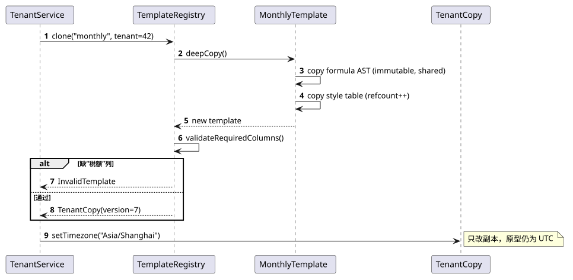

图形编辑器里，复制一个已经调好大小和颜色的圆，比重新 new 再逐字段赋值更可靠。原型模式把“怎么造自己”交给对象本身：调用 clone，拿到一份独立副本。
坏写法是调用方逐个字段抄：
shape_t copy;
copy.kind = src->kind;
copy.size = src->size;
copy.color = src->color; /* 以后加字段，这里必漏 */字段一多就漏；如果对象内部还有指针，浅拷贝会让两份共享同一块内存，改一份污染另一份。
原型让对象自己负责复制：clone(src, &dst)。以后加字段只改 clone，调用方永远只写一行。
左边是编辑器，中间是原型登记表，右边是克隆出来的副本。
C 版 clone(src, out) 由调用方给两块存储，避免静态缓冲被两份副本共享；C++ 版用拷贝构造，副本是独立对象。
/* 原型 · 克隆图形
* gcc -std=c11 -Wall -Wextra prototype.c -o prototype
*/
#include <stdio.h>
#include <string.h>
typedef struct shape shape_t;
struct shape {
const char *kind;
int size;
void (*clone)(const shape_t *, shape_t *out);
};
static void circle_clone(const shape_t *s, shape_t *out) { *out = *s; }
static void square_clone(const shape_t *s, shape_t *out) { *out = *s; }
static shape_t CIRCLE = { "圆", 10, circle_clone };
static shape_t SQUARE = { "方", 10, square_clone };
static shape_t *registry(const char *kind)
{
if (strcmp(kind, "circle") == 0) return &CIRCLE;
if (strcmp(kind, "square") == 0) return &SQUARE;
return NULL;
}
int main(void)
{
shape_t a, b;
registry("circle")->clone(&CIRCLE, &a);
registry("circle")->clone(&CIRCLE, &b);
printf("克隆两份圆：a.size=%d b.size=%d\n", a.size, b.size);
b.size = 25;
printf("改 b 之后：a.size=%d b.size=%d（互不影响）\n", a.size, b.size);
printf("原型仍是 size=%d\n", CIRCLE.size);
return 0;
}克隆两份圆：a.size=10 b.size=10 改 b 之后：a.size=10 b.size=25（互不影响） 原型仍是 size=10
// 原型 · 克隆图形
// g++ -std=c++17 -Wall -Wextra prototype.cpp -o prototype_cpp
#include <cstdio>
#include <memory>
#include <string>
class Shape {
public:
explicit Shape(std::string kind, int size) : kind_(std::move(kind)), size_(size) {}
virtual ~Shape() = default;
virtual std::unique_ptr<Shape> clone() const = 0;
std::string kind() const { return kind_; }
int size() const { return size_; }
void setSize(int s) { size_ = s; }
private:
std::string kind_;
int size_;
};
class Circle final : public Shape {
public:
Circle() : Shape("圆", 10) {}
std::unique_ptr<Shape> clone() const override {
return std::make_unique<Circle>(*this);
}
};
class Square final : public Shape {
public:
Square() : Shape("方", 10) {}
std::unique_ptr<Shape> clone() const override {
return std::make_unique<Square>(*this);
}
};
int main()
{
Circle proto;
auto a = proto.clone();
auto b = proto.clone();
std::printf("克隆两份圆：a.size=%d b.size=%d\n", a->size(), b->size());
b->setSize(25);
std::printf("改 b 之后：a.size=%d b.size=%d（互不影响）\n", a->size(), b->size());
std::printf("原型仍是 size=%d\n", proto.size());
return 0;
}克隆两份圆：a.size=10 b.size=10 改 b 之后：a.size=10 b.size=25（互不影响） 原型仍是 size=10
| 角色 | C 版 | C++ 版 | 差别意味着什么 |
|---|---|---|---|
| 怎么复制 | 函数指针 clone(src, out) | 拷贝构造 / clone() | C 要显式给目标存储 |
| 副本存储 | 调用方栈上的两块对象 | 堆上的新对象 | C 版没有隐藏分配 |
| 加字段 | 改 clone 实现 | 改拷贝构造 | 调用方都不改 |
| 原型可变吗 | 约定只读 | 约定只读或返回 const | 原型被改，所有克隆都跟着错 |
参考教程：refactoringguru.cn
生产实例：多租户报表模板克隆
SaaS 报表平台给每个租户一份模板：列顺序、公式、时区、币种。模板对象内部有公式 AST 和样式表指针，直接赋值会让所有租户共享同一份，某租户改列就污染全体。原型模式让登记表 clone() 出深拷贝，租户只改自己的副本。

@startuml
autonumber
participant "TenantService" as T
participant "TemplateRegistry" as R
participant "MonthlyTemplate" as M
participant "TenantCopy" as C
T -> R: clone("monthly", tenant=42)
R -> M: deepCopy()
M -> M: copy formula AST (immutable, shared)
M -> M: copy style table (refcount++)
M --> R: new template
R -> R: validateRequiredColumns()
alt 缺“税额”列
R --> T: InvalidTemplate
else 通过
R --> T: TenantCopy(version=7)
end
T -> C: setTimezone("Asia/Shanghai")
note right: 只改副本，原型仍为 UTC
@enduml